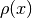
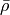

pmesh.particlemesh module¶
PyPM: A Particle Mesh code in Python
-
class
pmesh.particlemesh.ParticleMesh(BoxSize, Nmesh, paintbrush='cic', comm=None, np=None, verbose=False, dtype='f8')[source]¶ Bases:
objectParticleMesh provides an interface to solver for forces with particle mesh method
ParticleMesh object is a state machine. Refer to Introduction on the standard steps to use this object.
Memory usage is twice the size of the FFT mesh. However, Be aware the transfer functions may take more memory.
Attributes
np (array_like (npx, npy)) The shape of the process mesh. This is the number of domains per direction. The product of the items shall equal to the size of communicator. For example, for 64 rank job, np = (8, 8) is a good choice. Since for now only 3d simulations are supported, np must be of length-2. The default is try to split the total number of ranks equally. (eg, for a 64 rank job, default is (8, 8) comm ( MPI.Comm) the MPI communicator, (default is MPI.COMM_WORLD)Nmesh (int) number of mesh points per side. Only 3d simulations are supported by now, and the true mesh is [Nmesh, Nmesh, Nmesh] BoxSize (float) size of box domain ( pmesh.domain.GridND) domain decomposition (private)partition ( pfft.Partition) domain partition (private)real (array_like) the real FFT array (private) complex (array_like) the complex FFT array (private) w (list) a list of the circular frequencies along each direction (-pi to pi) k (list) a list of the wave numbers k along each direction (- pi N/ L to pi N/ L) x (list) a list of the position along each direction (-L/2 to L/ 2). x is conjugate of k. r (list) a list of the mesh position along each direction (-N/2 to N/2). r is conjugate of w. T ( pmesh.tools.Timers) profiling timers-
c2r(transfer_functions=[])[source]¶ Complex to real transformation.
Parameters: transfer_functions : list of
transfer.TransferFunctionA chain of transfer functions to apply to the complex field.
-
clear()[source]¶ Clear the internal real canvas.
This function simply set real[:] = 0. After
clear(),paint()can correctly paint to the canvas.Notes
A freshly created
ParticleMeshobject come with a cleared canvas.
-
decompose(pos)[source]¶ Create a domain decompose layout for particles at given coordinates.
Parameters: pos : array_like (, ndim)
position of particles in simulation unit
Returns: layout : :py:class:domain.Layout
layout that can be used to migrate particles and images
to the correct MPI ranks that hosts the PM local mesh
-
paint(pos, mass=1.0)[source]¶ Paint particles into the internal real canvas.
Transform the particle field given by pos and mass to the overdensity field in fourier space and save it in the internal storage. A multi-linear CIC approximation scheme is used.
The function can be called multiple times: the result is cummulative. In a multi-step simulation where
ParticleMeshobject is reused, before callingpaint(), make sure the canvas is cleared withclear().Parameters: pos : array_like (, ndim)
position of particles in simulation unit
mass : scalar or array_like (,)
mass of particles in simulation unit
Notes
self.real is the density field () after this operation. (In units of per cubic distance)
-
pop()[source]¶ Restore the complex field
The complex field was saved to an internal stack by
push().
-
push()[source]¶ Save the complex field
The complex field is saved to an internal stack. Recover the complex field with
pop().
-
r2c()[source]¶ Perform real to complex FFT on the internal canvas.
The complex field will be dimensionless; this is to ensure if NormalizeDC is applyed, c2r produces as expected.
(To obtain CFT, multiply by from the factor )
Therefore, the zeroth component of the complex field is .
-
readout(pos)[source]¶ Read out from real field at positions
Parameters: pos : array_like (, ndim)
position of particles in simulation unit
Returns: rt : array_like (,)
read out values from the real field.
-
transfer(transfer_functions)[source]¶ Apply transfer functions
Apply a chain of transfer functions to the complex field, in place. If the original field shall be preserved, use
push().Parameters: transfer_functions : list of :py:class:transfer.TransferFunction
A chain of transfer functions to apply to the complex field.
-